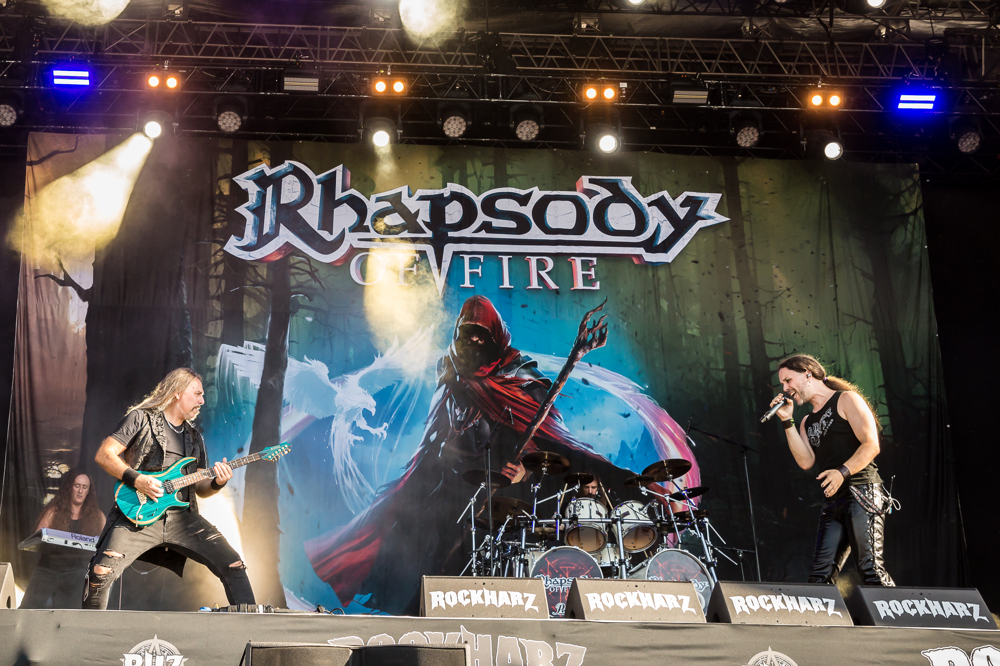
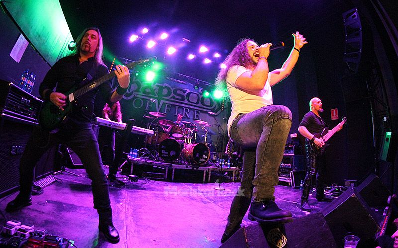
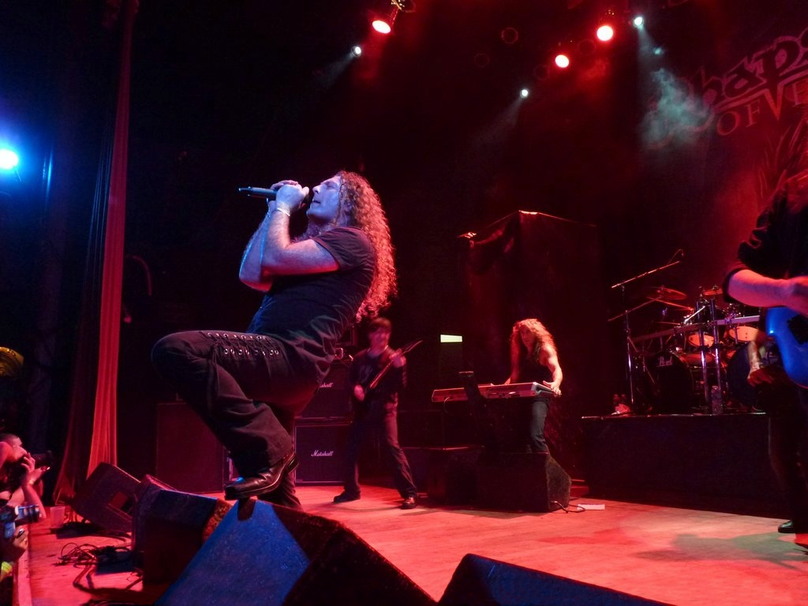
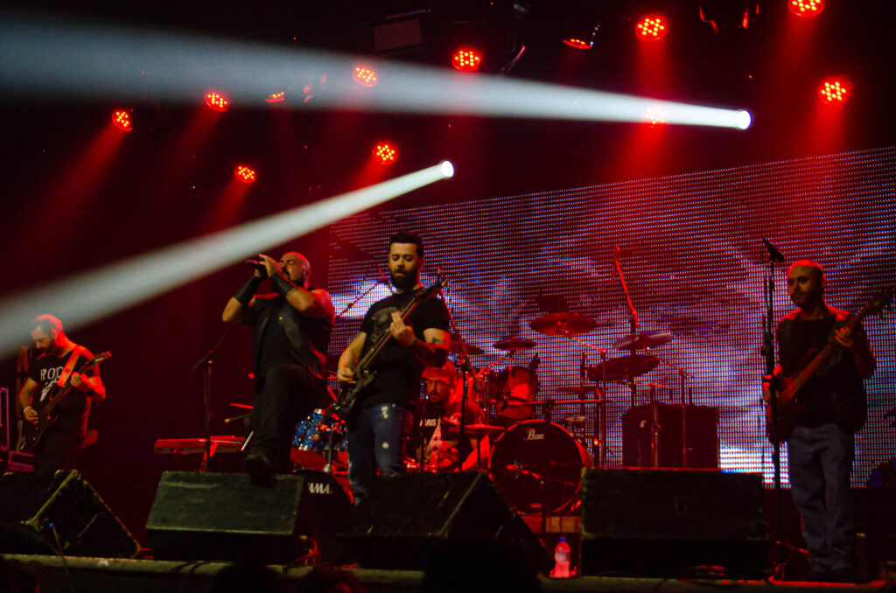

Esqueça a fantasia por cinco minutos.
Eu sei.
Parece um pedido absurdo quando estamos falando de Rhapsody of Fire.
Afinal, poucas bandas abraçaram com tanta vontade mundos imaginários, batalhas, jornadas, espadas, coros, narrativas épicas e uma estética que parece ter saído diretamente de algum universo cinematográfico.
Tudo isso importa.
Mas hoje vamos começar de outro lugar.
Tire os olhos do dragão. Escute a banda.
Porque debaixo de toda aquela escala existe power metal.
Velocidade.
Precisão.
Guitarras.
Teclados.
Baixo.
Bateria.
Voz.
E uma quantidade enorme de música acontecendo ao mesmo tempo.

Banda não é apenas o nome no pano de fundo.
Existem pessoas dentro daquela máquina.
E esta história fica muito mais interessante quando paramos de tratar Rhapsody como uma entidade abstrata.
A identidade clássica da banda foi construída por músicos com responsabilidades muito diferentes — composição, guitarra, teclados, voz, baixo, bateria e, principalmente, ideias.
Agora não pense neles como três nomes.
Pense em três funções.
Guitarra cria movimento.
Teclado e arranjo ampliam o mundo.
Voz precisa sobreviver no centro de tudo isso.
O truque não está em fazer tudo soar grande. Está em fazer tudo soar grande sem perder a música.
Agora entre na aldeia.
Aqui a fantasia não é cenário.
Ela entra na própria construção sonora.
Elementos folk.
Melodias que parecem pertencer a algum lugar antigo.
Uma sensação quase medieval.
E ainda assim a banda continua dentro de sua linguagem metálica.
Rhapsody of Fire — The Village of Dwarves · Masters of Rock, 2005.

Holy Thunderforce.
Agora corre.
Se The Village of Dwarves permite observar o lado melódico, folk e quase teatral do Rhapsody, aqui a máquina mostra outra face.
Velocidade.
Ataque.
Power metal sem pedir licença.
Rhapsody of Fire — Holy Thunderforce · ao vivo.
Às vezes “épico” não significa lento e gigantesco. Às vezes significa atravessar a paisagem a duzentos quilômetros por hora.
Rhapsody. Rhapsody of Fire. Reuniões. Caminhos separados.
Bandas também mudam de forma.
Integrantes saem.
Outros permanecem.
Projetos paralelos aparecem.
Nomes mudam.
E às vezes uma história que parecia pertencer a uma única linha começa a produzir ramificações.
É por isso que não vamos fingir que existe apenas “um Rhapsody” congelado no tempo.
Existem eras.
Existem formações.
Existem reencontros.
E cada combinação muda alguma coisa no palco.

Agora veja a velha máquina voltar a funcionar.
Rhapsody Reunion.
O próprio nome já muda a maneira de assistir.
Porque não estamos apenas ouvindo uma música.
Estamos olhando para músicos de uma história anterior voltando a ocupar o mesmo território.
Rhapsody Reunion — Dawn of Victory · Graspop, 2017.
The Magic of the Wizard's Dream.
Há momentos em que explicar música estraga a música.
Este é um deles.
Você já ouviu velocidade.
Já ouviu virtuosismo.
Já ouviu uma banda inteira correndo.
Agora não procure nada.
Apenas escute.
Técnica pode impressionar. Música pode fazer outra coisa.
Rhapsody of Fire — The Magic of the Wizard's Dream · Innsbruck, Austria · 2024.
Entendeu?
Técnica impressiona.
Velocidade impressiona.
Alcance vocal impressiona.
Uma orquestração enorme impressiona.
Mas existe um ponto em que nada disso importa sozinho.
Música deixa de ser demonstração quando encontra alguma coisa dentro de você que você não estava procurando.
É nesse momento que virtuosismo deixa de ser objetivo e volta a ser aquilo que deveria ter sido o tempo inteiro:
linguagem.
Escute outra vez.
Só que agora faça exatamente o contrário.
Acabamos de pedir para você abandonar a análise.
Agora vamos desmontar tudo novamente.

Essa é talvez uma das maneiras mais interessantes de ouvir qualquer banda carregada de arranjos.
Não tente ouvir tudo.
Primeiro ouça menos.
Depois devolva o mundo inteiro.
Agora chega de desmontar.
Devolve tudo.
Guitarra.
Teclados.
Bateria.
Baixo.
Voz.
Coros.
Fantasia.
Público.
Memória.
Agora simplesmente escute.
Rhapsody of Fire — Emerald Sword · Hellfest, 2024.
Você pode discutir o rótulo durante horas. A banda provavelmente continuará tocando enquanto você decide.
Então o que diabos estamos ouvindo?
Uma colisão organizada.
Power metal fornece parte da velocidade, da energia e da linguagem instrumental.
Elementos sinfônicos ampliam escala, textura e narrativa.
Coros podem transformar refrões em acontecimentos coletivos.
Teclados e orquestrações podem criar paisagens que uma formação tradicional dificilmente construiria sozinha.
Mas nada disso funciona se a banda desaparecer embaixo do arranjo.
Symphonic Power Metal não é uma orquestra salvando uma banda. É uma banda que aprendeu a carregar uma orquestra dentro de sua linguagem.
E Rhapsody ajudou a transformar essa linguagem em algo imediatamente reconhecível.
Não apenas pelo som.
Pela maneira de construir mundos.
Antes do Rhapsody, havia outra porta.
Therion.
Se aqui encontramos fantasia, velocidade e uma linguagem quase cinematográfica, nossa parada anterior mostrou outra possibilidade.
Banda.
Coro.
Orquestra.
E uma experiência construída justamente para colocar esses mundos diante uns dos outros.
Therion — The Miskolc Experience →E agora?
Talvez você ainda chame tudo isso simplesmente de metal.
Tudo bem.
Só espero que depois dessa viagem a palavra tenha ficado um pouco maior.
Porque ouvir Rhapsody apenas pela fantasia é perder a banda.
Ouvir apenas pela técnica é perder a emoção.
Ouvir apenas a voz é perder a máquina.
Ouvir apenas a máquina é perder o mundo construído em volta dela.
Algumas músicas pedem que você escolha um instrumento. Outras pedem que você pare de escolher.
Rhapsody consegue fazer as duas coisas.
Every Song Is A Destination.
A Passport Radio é um arquivo editorial dedicado às histórias, pessoas, lugares, movimentos e acontecimentos que existem por trás da música.
Aqui a música não é tratada como fundo.
É documento.
É memória.
É destino.